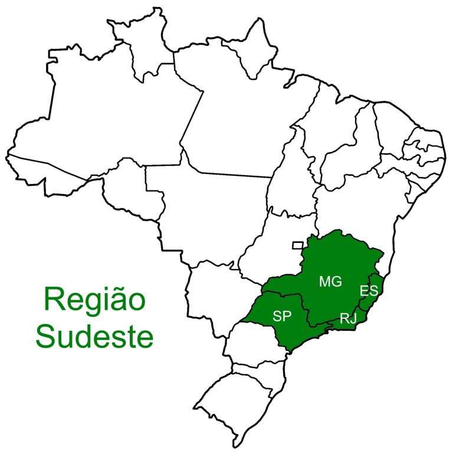

|  | A Região Sudeste do Brasil é formada por 4 unidades da federação: Espírito Santo - Vitória (ES) Minas Gerais - Belo Horizonte (MG) Rio de Janeiro - Rio de Janeiro (RJ) São Paulo - São Paulo (SP) Dono da maior população do país, o sudeste tem 3 estados ocupando os primeiros lugares da classificação geral, sendo em 1º lugar São Paulo, em 2º Minas Gerais e em 3º Rio de Janeiro. São Paulo e Rio de Janeiro também são os municípios com mais habitantes no país. Com uma das menores áreas, a região também é muito conhecida por seus pontos turísticos, como o Cristo Redentor na cidade do Rio de Janeiro. |
|---|---|